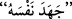

Münâfıklar “sen hakîkaten kendilerine” savaşa çıkmayı “emrettiğin takdirde
mutlaka (savaşa) çıkacaklarına dâir, en ağır yeminleri ile Allah’a yemin ettiler.”
“
(Yemin ettiler)” kelimesinin aslı “
”dendir. Birinin kanı husûsunda töhmet
altında bulunanlara yaptırılan yeminlerden ibârettir. Sonra her türlü yemine isim
olmuştur. “
”, güç ve tâkat demektir. “
” ise sözlükte kuvvet, şerîatta ise bir
haberin doğru veya yanlış olduğunu Allah’ı anarak pekiştirmektir. İmam Râğıb, der ki:
“Yemin etmek mânâsındaki “
” kelimesi, anlaşma ve sözleşme yapan kimselerin o
sırada yaptıkları dikkate alınarak sağ elden istiâre olarak alınmıştır.”
el-İrşâd’da der ki: “Yâni onlar yeminlerini iyice kuvvetlendirerek, perçinleyerek
Allah’a yemin ettiler. “
”in mânâsı yeminin en son noktasına ulaşmak demektir.
Kişinin tâkâtinin son noktasına ulaştığını ifâde etmek için kullanılan
sözünden
istiâre yoluyla alınmıştır. Yâni onlar, şiddet ve kuvvet bakımından yeminin en son
mertebesine ulaşmaya çalışarak yemin ettiler. Kim “
(Allah adına yemin
ediyorum)” derse en yüksek dereceden yemin etmiş olur. İstiârenin mânâsı da şudur:
Yemin için, münâfıkların ulaşabileceği bir güç ve bir takat söz konusu olamayacağı için
bunun aslı “yeminlerini iyice kuvvetlendirdiler.” şeklinde olur. Münâfıklar, kendilerine
mahsus yeminlerin en büyüğüyle yemin ettiler.
Münâfıklar Rasûlullah (s.a.)’e: “Sen nerde olursan biz de seninle beraber oluruz. Sen
çıkarsan biz de seninle çıkarız. Kalırsan biz de kalırız. Bize cihâdı emredersen cihâd
ederiz.” diyorlardı.
Onların bu sözleri yalan ve yeminleri de asılsız olduğu için bunları reddetme
sadedinde Allah Teâlâ Peygamberi’ne (a.s.) şöyle buyurdu: “De ki:” iddiâ ettiğiniz
itâatiniz hakkında Allah’a “yemin etmeyin. İtâatiniz malumdur!” Çünkü sizin itâatiniz,
kalbde yerleşmemiş olup sadece dilde olan nifaklı bir itâattir. Bu itâatin “malum”
olduğunun ifâde edilmesi, bunun böyle olduğunun meşhur ve herkes tarafından
bilinmekte olduğunu bildirmek içindir. Nitekim el-İrşâd’da böyle geçmektedir.
Bazıları da şöyle der: İhlâs ve doğru bir niyetle bilinen bir itâat, sizin için dille yemin
etmekten daha faydalıdır. Zâten sizden istenen de yalan yere yemin etmek değil, işte
budur.
et-Te’vîlâtü’n-Necmiyye’de der ki: “De ki:” sözlü olarak yalan yere “yemin
etmeyin.” Bilâkis fiilî olarak itâat edin. Çünkü o, kuru sözle değil, ancak fiillerle
“bilinen bir itâattir.”
“Bilin ki Allah yaptıklarınızdan” yâni hâlinizin, gerçek sözünüzün yalan olduğundan
veya sözle itâat, fiille muhâlefet etmenizden “haberdardır.” Ona göre de size karşılık
verecektir.